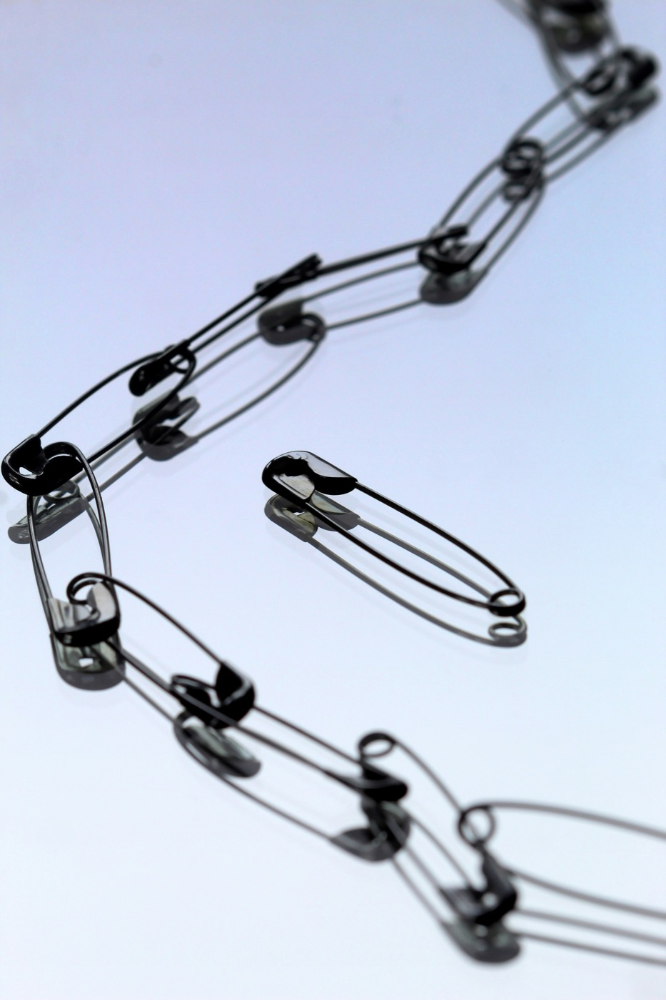

Annelik yolculuğunda köklerinizi birlikte güçlendirelim
Psikolog, yazar ve yoga eğitmeni. Annelere bireysel koçluk, bağlanma temelli ebeveynlik atölyeleri ve kelimelerle iyileşme üzerine çalışıyorum. Bu sayfada hepsini bir araya getirdiğim alanımı bulacaksınız.

Dört yol, tek bir adres
Terapi & koçluk
Annelere özel bireysel görüşmeler; bağlanma, kimlik ve dönüşüm üzerine.
Ebeveynlik atölyeleri
Bağlanma temelli grup atölyeleriyle ebeveynlere rehberlik ediyorum.
Yazılarım
Annelik ve içsel yolculuk üstüne deneme yazılarım ve minik öykülerim.
Yoga
Nefes ve bedenle yeniden bağ kurmak için birlikte yoga çalışıyoruz.
Son denemeler
Terapi gibi
Denize bakmak terapi gibi değil; peki terapi neye benziyor? “Terapi gibi”cilere küçük bir mektup.
Oku → DenemeAnnelikte iç ses
Dışarıdaki sesler o kadar çok ki, kendi iç sesini duyamamak… ve onun geri gelişi.
Oku → Deneme · Ocak’23Lüks dert
Dert yarıştırmak, “benimki de dert mi” demek… Kim karar veriyor lüks olmayan dertlere?
Oku →
Merhaba, ben Zeynep
Yıllardır annelerin yanında, bağlanma temelli bir bakışla çalışıyorum. Hem danışanlarımla yürüttüğüm görüşmelerde hem de atölyelerimde, kadınların kendi köklerini bulmasına alan açmaya çalışıyorum.
Yazı benim için düşünmenin başka bir yolu; denemelerim ve öykülerim de bu arayışın bir parçası. Yoga ise bedenle kurduğum bağı tazeliyor.